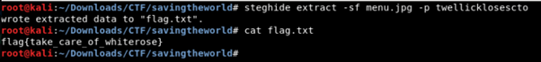

BSidesBOS CTF
Challenge :
Kiddie the Pool (Warmups)
Read the Rules (Warmups)
Baseball (Warmups)
Give Up (Warmups)
Saving The World (Steganography)
Secret Romance (Steganography)
CTF Date : 26 Sept 2020 (09:00 AM EST – 05:00 PM EST)
Kiddie the Pool (Warmups)
from the given description of the challenge, I conclude that this challenge would involve with some kind of effect in graphic design. And from the downloaded file, we could see a glimpse of the flag but we couldn't read it easily because of some kind of effect. after search for the effect that was used on the photo, I got the similar effect named Twirl, lets reverse the image! and I reverse it by using Photopea and after reverse it, we could see the flag clearly.
flag{whirlpool_in_a_cinch}
Read the Rules (Warmups)
from the description, we have to read the rules of this CTF, and when I tried to inspect element the page, there is the flag of this challenge.flag{its_time_to_hack}
Baseball (Warmups)
first thing i do is download the given file named Baseball, and check what inside the file using "cat" command and I found suspicious string and tried to investigate it using most favorite tool for CTF player called Magic from CyberChef. now I know the encryption used on the strings and for the next step is to decrypt it.
First I know that is base64 encode, and after a little bit struggle (because this is the second time I did CTF) I figure out the second
encryption, it is base32, and Voila! the flag is mine haha!
now I know the encryption used on the strings and for the next step is to decrypt it.
First I know that is base64 encode, and after a little bit struggle (because this is the second time I did CTF) I figure out the second
encryption, it is base32, and Voila! the flag is mine haha!
flag{wow_you_hit_a_homerun_and_really_ran_the_bases_there}
Give Up (Warmups)
after start the instace of this challenge, we tried to connect it by using "nc challenge.ctf.games 30786" But we could not find anything interesting until we discussed with other team who solved this challenge, and we got the hint about "Give Up", the Give Up means to exit the netcat connection by using "exit" command. and the flag is ours!flag{sometimes_it_is_best_to_step_away}
from the given image, I notice strange number on the image and after further investigation I notice the number was A1Z26 encoding and when I decrypt it, I got another strange string after struggle a little bit to figure out what kind of that string is, I found it was Vigenere Cipher and using this web I got another string (so many string :(), From the decryption result, I got the password "twellicklosescto" and using tool called Steghide (Tool to extract a Stegano inside an image), flag{take_care_of_whiterose}
after download the given zipped file, I got 1 text file and another zipped file called message.zip, so I check whats inside the text file the hint was “Le Cirque des Rêves”, so I search it on Google and found it was a book from Erin Morgenstern called "Night Circus", and from Wikipeda I tried to search the keyword but I got nothing until I search the synonym for "center" and I got word "Central" and "bonfire". now its time to check if the password is bonfire or not voila! it was open and there is another text file and one new image file, because the previous challenge use Steghide, this time I tried to use it too. by using "erinmorgenstern" as a password I extracted the flag.txt.flag{the_night_circus}
thats it for this writeup, hope you guys enjoy read it, and thank you for read it too, see you later!